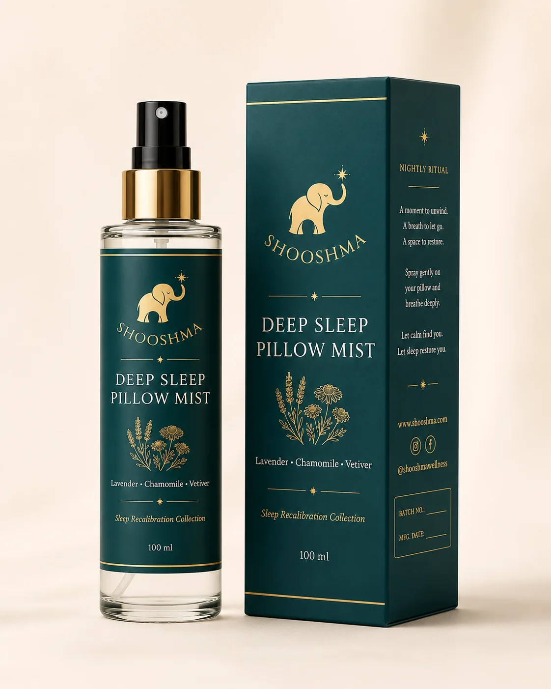

Adım 01 · 100 ml / 50 ml
Deep Sleep Pillow Mist
Uyku alanını hazırlayan açılış. İnce, dikey cam şişe; başucu için sakin ve rafine bir siluet. Yastığa, çarşafa ya da pijamaya hafifçe.
- Botanikler
- Lavanta · Papatya · Vetiver
- Kullanım
- Yastık & tekstil üzerine hafif sprey
- Etiket
- 65 × 90 mm
- Kutu
- 165 × 55 × 55 mm